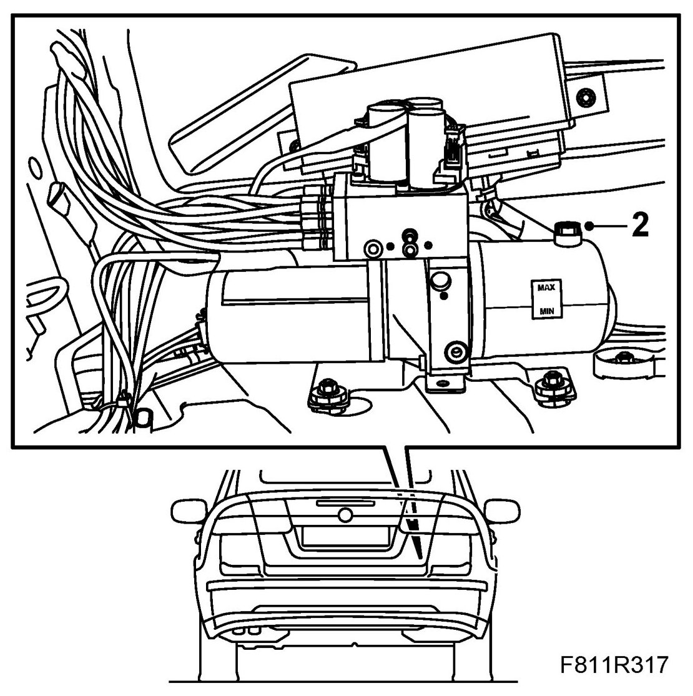
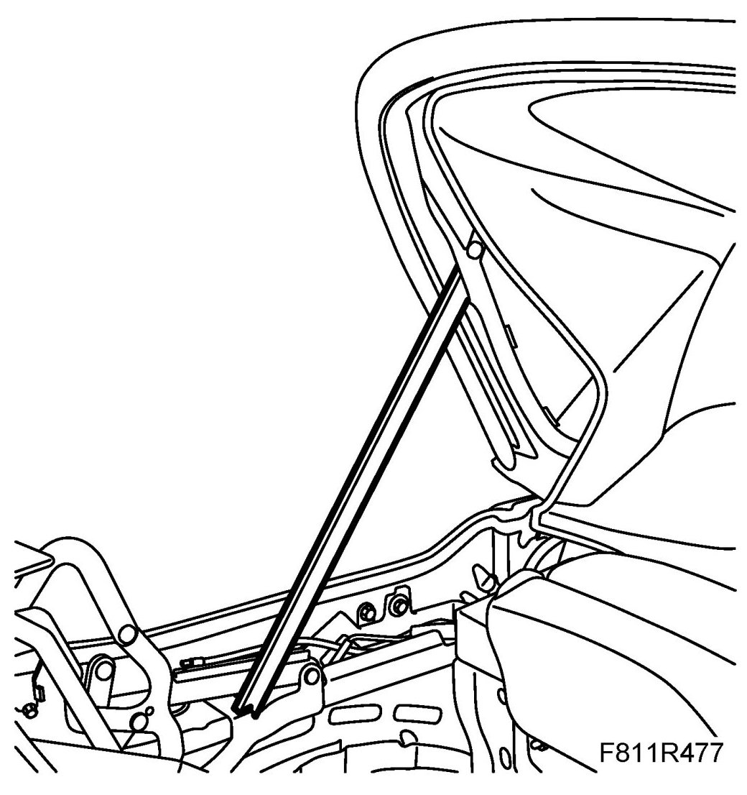
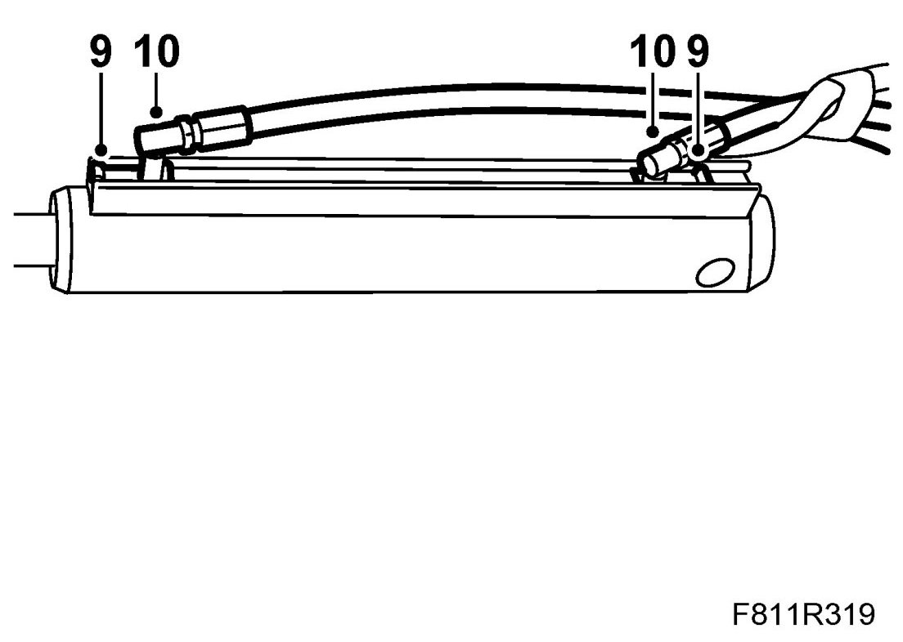
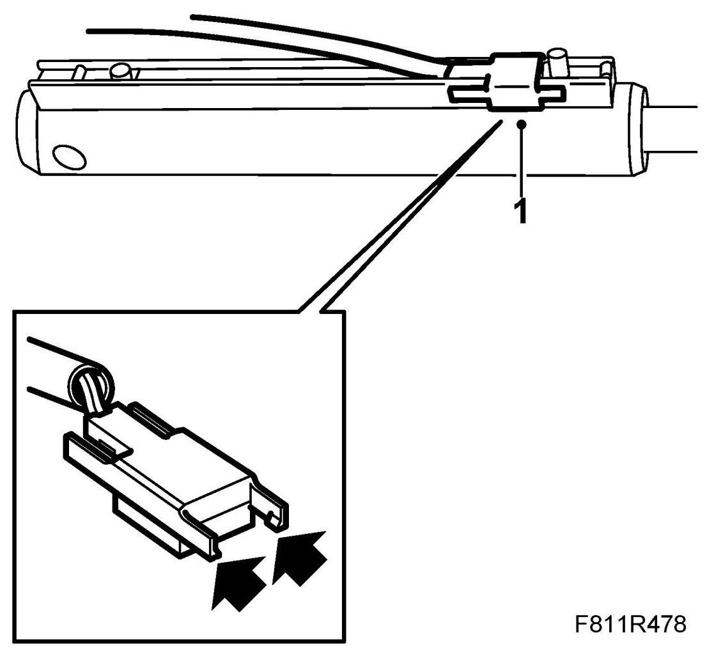
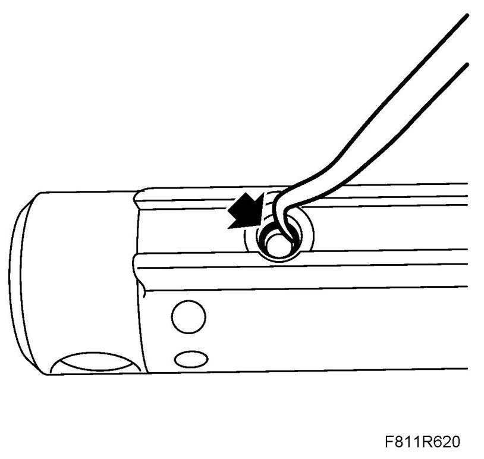
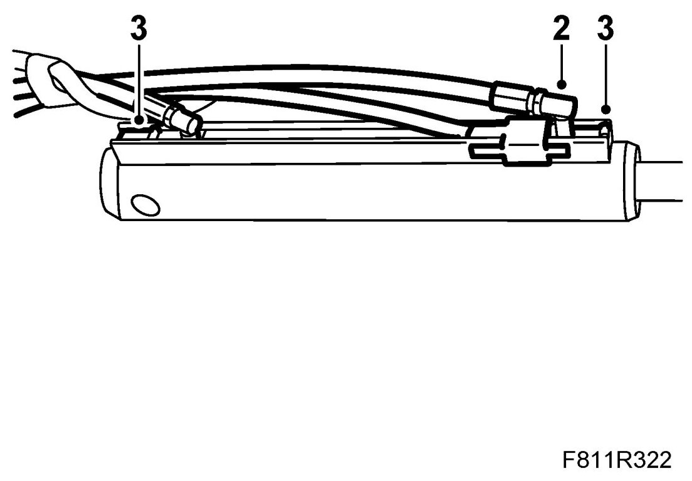
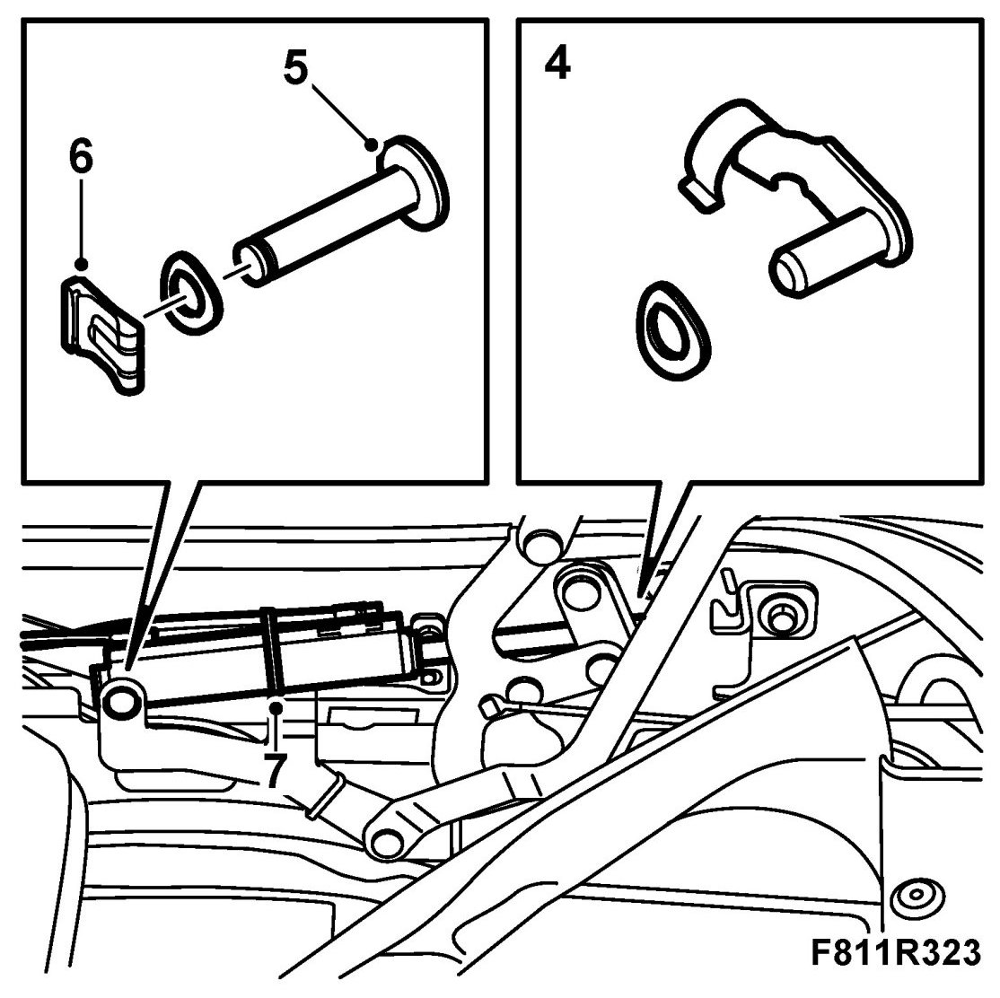

Soft Top Cover Hydraulic Cylinder
Soft Top Cover Hydraulic Cylinder
Removing
1. Remove the Luggage compartment side trim, CV on the right-hand side.
2. Remove the fluid filler plug from the hydraulic system reservoir (to equalise the pressure). Refit the plug.

3. Open the soft top cover. Raise the sixth bow and support it with 82 93 847 Soft top support.

4. Remove the cable tie on the position sensor cable on the right-hand side.
5. Remove the fastening pin for the hydraulic cylinder piston rod.
6. Remove the fastening pin clip for the hydraulic cylinder.
7. Remove the fastening pin for the hydraulic cylinder. Observe the accompanying washers.
8. Pull out the hydraulic cylinder somewhat to facilitate access to the hydraulic line connections. Place some paper under the hydraulic unit to catch any hydraulic fluid that may run out.
9. Open the hydraulic line retaining clips by pulling them out.

10. Pull out the hydraulic lines from the hydraulic cylinder and remove the hydraulic cylinder.
11. If the right-hand hydraulic cylinder is being changed, the position sensor must also be removed from the hydraulic cylinder. Use a screwdriver to carefully lift away the position sensor.
Fitting
1. Fit the position sensor if the right-hand hydraulic cylinder has been changed.

2. Remove the O-rings of the hydraulic cylinder using a blunt tool. Check the Orings and replace as necessary. Then fit the O-rings on the hydraulic lines before refitting the lines on the hydraulic cylinder. Use only one O-ring per hydraulic line.

Attach the hydraulic lines to the hydraulic cylinder by pressing them in.

3. Press on the hydraulic line retaining clips.
4. Place the hydraulic cylinder in position for fitting. Fit the fastening pin to the hydraulic cylinder piston rod. Fit the accompanying washer (if any).

5. Fit the fastening pin to the hydraulic cylinder. Take note of the accompanying washers (if any). The washer should be placed against the cylinder.
6. Fit the clip to the fastening pin.
7. Fit the cable ties to the position sensor cable on the right-hand side.
8. Remove the soft top support and raise the soft top.
9. Open and close the soft top for 5 complete cycles to bleed the system and check its function.
10. Check for any fluid leaks.
11. Check the oil level and top up as necessary. See Checking/filling oil.
12. Fit Luggage compartment side trim.
13. Connect the diagnostics tool and erase any diagnostic trouble code.